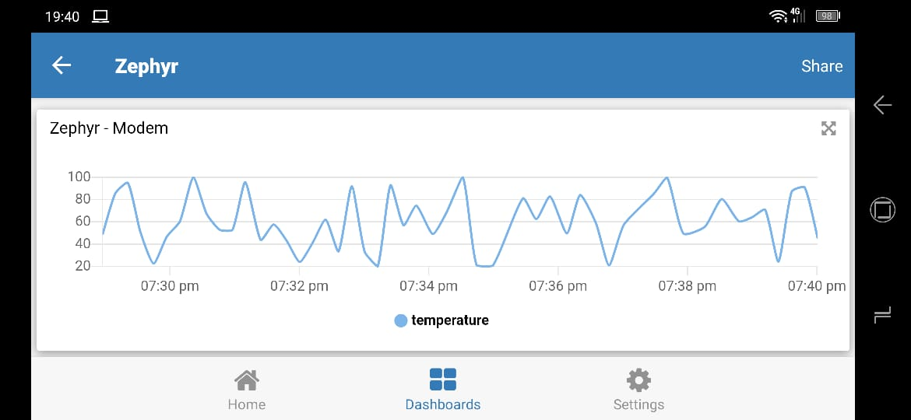

TagoIO IoT Cloud HTTP Sample¶
Overview¶
This sample application implements an HTTP client that will do an HTTP post request to TagoIO 1 IoT Service Platform. The sample sends random temperature values to simulate a real device. This can be used to speed-up development and shows how to send simple JSON data to TagoIO 1 servers.
The source code for this sample application can be found at: samples/net/cloud/tagoio_http_post.
Requirements¶
A board with internet connectivity, see Networking
The example provides three ways to get internet:
Ethernet: Using default configuration
WiFi: Using default configuration plus wifi overlay
Modem: Using default configuration plus modem overlay
TagoIO Device Configuration¶
If you don’t have a TagoIO 1 account, simple create a free account at
TagoIO 1. After that, add a device selecting Custom HTTP(S) protocol. That
is it! Now reveal your device token. The token will be used to identify your
device when sending data. You need fill CONFIG_TAGOIO_DEVICE_TOKEN at
samples/net/cloud/tagoio_http_post/prj.conf file with that
information.
Building and Running¶
Ethernet¶
You can use this application on a supported board with ethernet port. There are many like SAM4E Xplained Pro, SAM V71(B) Xplained Ultra, NXP FRDM-K64F, ST Nucleo F767ZI etc. Pick one and just build tagoio-http-client sample application with minimal configuration:
west build -b [sam4e_xpro | sam_v71_xult | frdm_k64f | nucleo_f767zi] samples/net/cloud/tagoio_http_post
west flash
WIFI¶
To enable WIFI support, you need a board with an embedded WIFI support like
ST Disco L475 IOT01 (B-L475E-IOT01A) or you can add a shield like
ESP-8266 Modules or Inventek es-WIFI Shield. Additionally you
need fill CONFIG_TAGOIO_HTTP_WIFI_SSID with your wifi network SSID and
CONFIG_TAGOIO_HTTP_WIFI_PSK with the correspondent password at
samples/net/cloud/tagoio_http_post/overlay-wifi.conf file.
west build -b disco_l475_iot1 samples/net/cloud/tagoio_http_post -- -DOVERLAY_CONFIG=overlay-wifi.conf
west flash
west build -b [sam_v71_xult | frdm_k64f | nucleo_f767zi] samples/net/cloud/tagoio_http_post -- -DSHIELD=[esp_8266_arduino | inventek_eswifi_arduino_uart] -DOVERLAY_CONFIG=overlay-wifi.conf
west flash
Modem¶
The Modem support is quite similar to WIFI, you need a board with an embedded
Modem support or you can add a shield. Currently, the overlay was created to
allow modems with PPP support. This was tested using SIMcom SIM808 EVB.
Additionally you need fill CONFIG_MODEM_GSM_APN with the correspondent Access
Point Name (APN) at
samples/net/cloud/tagoio_http_post/overlay-modem.conf file. A
DTC overlay file should be used to configure the glue between the modem and the
uart port. It can reside at boards directory, with the board name, or it can be
a special designator like defined at arduino.overlay.
west build -b sam4e_xpro samples/net/cloud/tagoio_http_post -- -DOVERLAY_CONFIG=overlay-modem.conf
west flash
west build -b frdm_k64f samples/net/cloud/tagoio_http_post -- -DOVERLAY_CONFIG=overlay-modem.conf -DDTC_OVERLAY_FILE=arduino.overlay
west flash
In a terminal window you can check if communication is happen:
$ minicom -D /dev/ttyACM0
*** Booting Zephyr OS build zephyr-v2.4.0-1135-g137732e23c1e ***
[00:00:02.172,000] <inf> modem_gsm: Manufacturer: SIMCOM_Lt
[00:00:02.227,000] <inf> modem_gsm: Model: SIMCOM_SIM808
[00:00:02.283,000] <inf> modem_gsm: Revision: 1418B04SIM808M32
[00:00:02.338,000] <inf> modem_gsm: IMSI: XXXXXX
[00:00:02.393,000] <inf> modem_gsm: ICCID: XXXXXX
[00:00:02.453,000] <inf> modem_gsm: IMEI: XXXXXX
[00:00:02.574,000] <inf> modem_gsm: Attached to packet service!
[00:00:02.575,000] <inf> net_ppp: Initializing PPP to use UART_3
[00:00:13.370,000] <inf> tagoio: TagoIO IoT - HTTP Client - Temperature demo
[00:00:13.370,000] <inf> tagoio: Temp: 20
[00:00:25.237,000] <inf> tagoio: Temp: 76
[00:00:37.581,000] <inf> tagoio: Temp: 36
[00:00:50.437,000] <inf> tagoio: Temp: 98
Visualizing TagoIO dashboard¶
After you got some logs on console it is time to create a dashboard on the TagoIO to visualize the data.
Go to the TagoIO web console
Create a dashboard as Normal, give it a denomination and move next
Add a line plot graph. You will see your device, temperature variable will be automatically selected for you.
Just Save and enjoy!
{kind=link}
You can experiment the TagoIO mobile application on your cellphone or tablet. Simple go to your app store and search by TagoIO, install, sign in, enjoy!
{kind=link}
More information at TagoIO 1 and TagoIO Documentation 2.